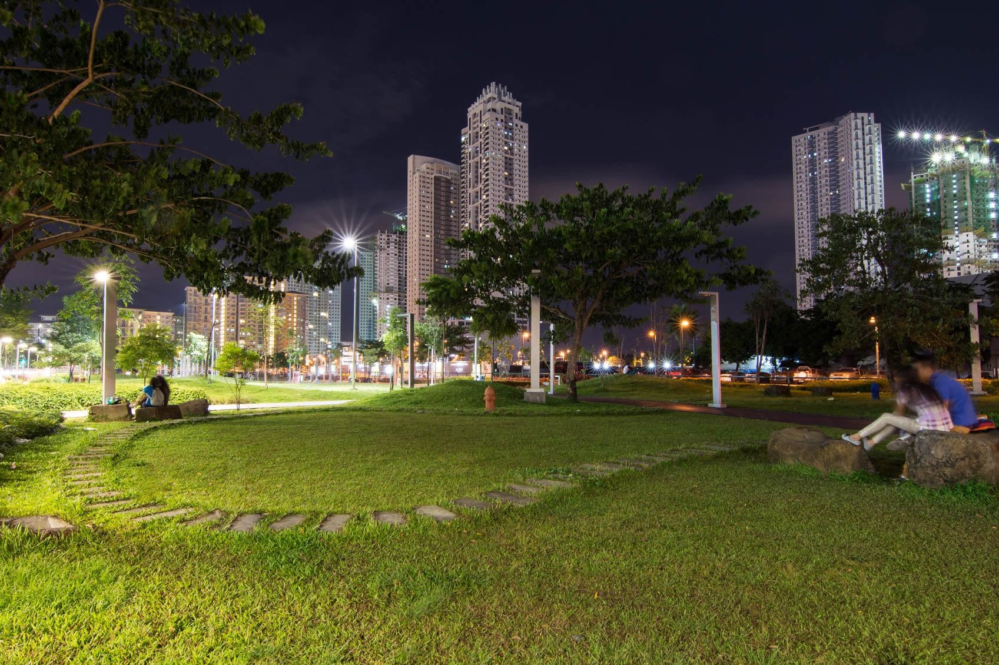

Bonifacio Global City

Situated in Taguig City, Metro Manila, Philippines, Bonifacio Global City (BGC), commonly referred to as The Fort, has emerged as a thriving urban district nestled between Makati and Pasig. Originally a military base, BGC underwent significant development in the 2000s, transforming into a modern and cosmopolitan hub. Named after the national hero Andres Bonifacio, the area seamlessly integrates its rich history with contemporary features, evolving into a central business district and sought-after lifestyle destination.
Activities
- The Mind Museum
- Terra 28th
- SM Aura Premier
The Mind Museum is a leading science museum in Metro Manila, Philippines. Opened in 2012, it offers interactive exhibits spanning various scientific disciplines. Designed for all ages, the museum provides a dynamic and immersive learning experience, fostering curiosity and understanding in physics, biology, astronomy, and environmental science. With state-of-the-art facilities, The Mind Museum is a valuable educational resource and a hub for promoting science, technology, and innovation in the region.
Global City's parks are urban sanctuaries, offering serene escapes with lush greenery and recreational spaces. Ideal for strolls, picnics, or outdoor activities, these well-maintained parks serve as vibrant hubs for community events and cultural celebrations, enhancing the overall charm of BGC.
SM Aura Premier is a prominent shopping and lifestyle destination in Bonifacio Global City (BGC), Metro Manila, Philippines. Operated by SM Prime Holdings, this upscale shopping mall stands out for its modern architecture, luxurious design, and diverse retail offerings. With a focus on high-end fashion, dining, and entertainment, SM Aura caters to a discerning clientele. The mall features an array of international and local brands, fine dining restaurants, and a cinema complex. Its sleek and contemporary design, coupled with a strategic location in the heart of BGC, makes SM Aura Premier a key landmark and a go-to destination for those seeking a sophisticated and upscale shopping experience in the dynamic urban landscape of BGC.